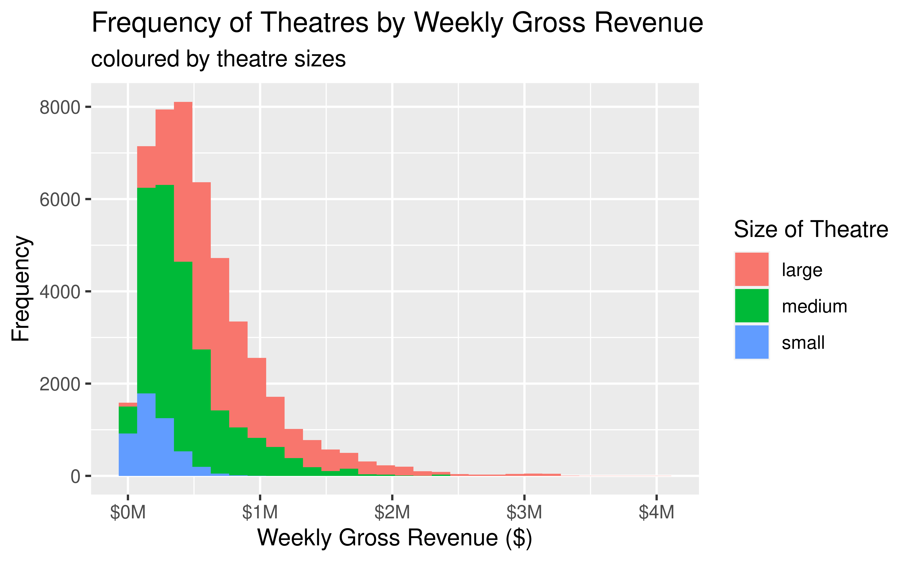
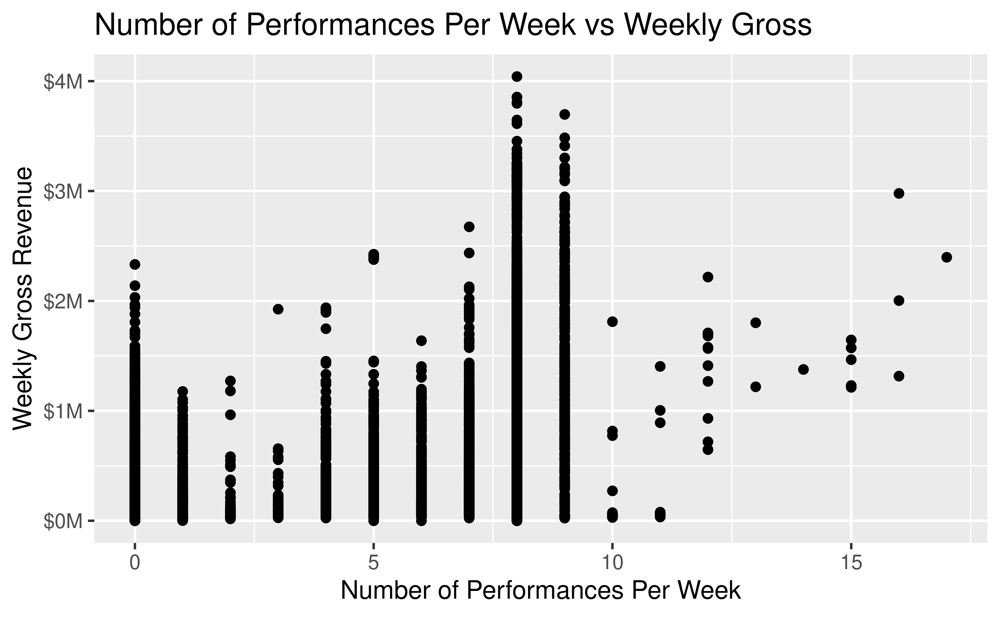
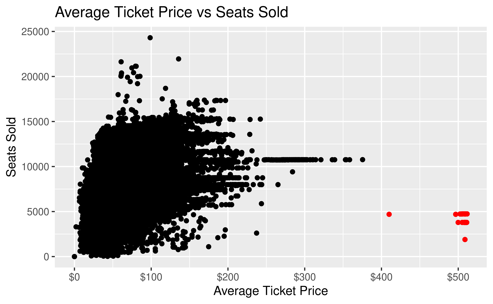

Maximising Profits for Broadway Theatres
team
Felix, Jeni, Janet
University of Edinburgh
2021-12-02
Dataset
- Tidy Tuesday project file
- Compiled from Playbill, a magazine for theatres
- Information on weekly grosses, average ticket price, etc of different theatre shows
- 14 variables, 47,524 observations
weekly_gross,avg_ticket_price,seats_sold,seats_in_theatre,pct_capacity,performances
Dataset
## Rows: 47,524
## Columns: 14
## $ week_ending <date> 1985-06-09, 1985-06-09, 1985-06-09, 1985-06-09, …
## $ week_number <dbl> 1, 1, 1, 1, 1, 1, 1, 1, 1, 1, 1, 1, 1, 1, 1, 1, 1…
## $ weekly_gross_overall <dbl> 3915937, 3915937, 3915937, 3915937, 3915937, 3915…
## $ show <chr> "42nd Street", "A Chorus Line", "Aren't We All?",…
## $ theatre <chr> "St. James Theatre", "Sam S. Shubert Theatre", "B…
## $ weekly_gross <dbl> 282368, 222584, 249272, 95688, 61059, 255386, 306…
## $ potential_gross <dbl> NA, NA, NA, NA, NA, NA, NA, NA, NA, NA, NA, NA, N…
## $ avg_ticket_price <dbl> 30.42, 27.25, 33.75, 20.87, 20.78, 31.96, 28.33, …
## $ top_ticket_price <dbl> NA, NA, NA, NA, NA, NA, NA, NA, NA, NA, NA, NA, N…
## $ seats_sold <dbl> 9281, 8167, 7386, 4586, 2938, 7992, 10831, 5672, …
## $ seats_in_theatre <dbl> 1655, 1472, 1088, 682, 684, 1018, 1336, 1368, 148…
## $ pct_capacity <dbl> 0.7010, 0.6935, 0.8486, 0.8405, 0.5369, 0.9813, 1…
## $ performances <dbl> 8, 8, 8, 8, 8, 8, 8, 8, 8, 8, 8, 8, 8, 9, 0, 8, 8…
## $ previews <dbl> 0, 0, 0, 0, 0, 0, 0, 0, 0, 0, 0, 0, 0, 0, 8, 0, 0…Research Question
- What are the factors that can affect the average ticket price of a show?
- Hence, how does average ticket price then influence the weekly gross revenue earned?
Gross Weekly Revenue
MUTATE Theatre Size
less than 750 seats = small, 750 ~ 1300 = medium, more than 1300 = large
Gross Weekly Revenue

Percentage Capacity

Week Running
Number of Performances Per Week

Average Ticket Price vs Seats Sold

The Log Model

Set Model
logxy_preliminary <-
linear_reg() %>%
set_engine("lm")
logxy <- logxy_preliminary %>%
fit(gross_log ~ price_log, data = grosses_log)\[y=e^{6.81}x^{1.51}\]
R Squared and RMSE
## # A tibble: 1 × 3
## .metric .estimator .estimate
## <chr> <chr> <dbl>
## 1 rsq standard 0.913## # A tibble: 1 × 3
## .metric .estimator .estimate
## <chr> <chr> <dbl>
## 1 rmse standard 0.445## # A tibble: 1 × 3
## .metric .estimator .estimate
## <chr> <chr> <dbl>
## 1 rsq standard 0.910## # A tibble: 1 × 3
## .metric .estimator .estimate
## <chr> <chr> <dbl>
## 1 rmse standard 0.451RSQ-RMSE Table & Cross Validation
| Pred | RSQ | RMSE |
|---|---|---|
| Test Data | 0.910 | 0.451 |
| Train Data | 0.913 | 0.445 |
## # A tibble: 2 × 6
## .metric .estimator mean n std_err .config
## <chr> <chr> <dbl> <int> <dbl> <chr>
## 1 rmse standard 0.445 5 0.00415 Preprocessor1_Model1
## 2 rsq standard 0.912 5 0.00569 Preprocessor1_Model1## id .metric .estimator .estimate
## Length:10 Length:10 Length:10 Min. :0.4346
## Class :character Class :character Class :character 1st Qu.:0.4436
## Mode :character Mode :character Mode :character Median :0.6760
## Mean :0.6784
## 3rd Qu.:0.9135
## Max. :0.9241
## .config
## Length:10
## Class :character
## Mode :character
##
##
## Equation & Graph
\[y=e^{6.81}x^{1.51}\] 
Conclusion
- theatre size, percentage capacity, average price influenced weekly gross
- number of performances per week, total number of weeks show ran for did not
- modelled relationship between average ticket price and weekly gross revenue, which was found to be positive
Limitations & Extensions
Limitations: might only be a particular set of customers in Broadway, larger samples of data
Future Extension: model that can include the exponential curvature of the graph